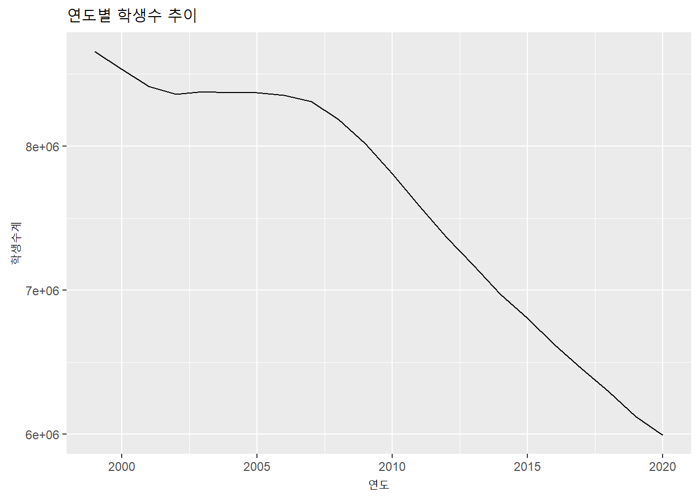
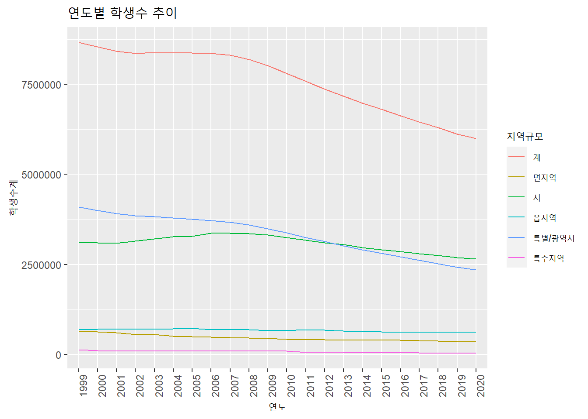
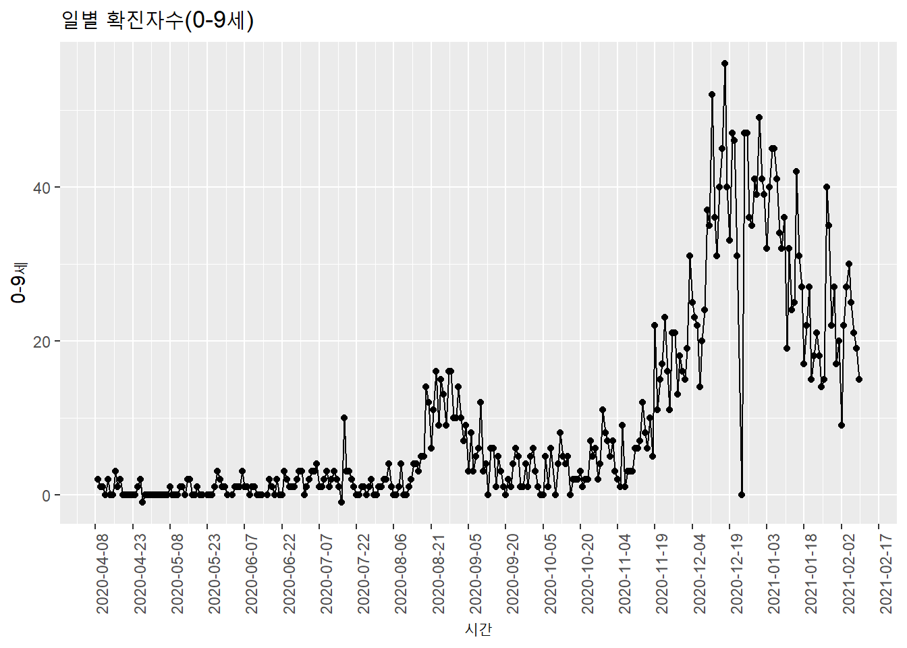

3.1 data.frame : ggplot2 패키지
ggplot2 패키지는 시계열 데이터 이외에 다양한 plot을 그리는 방법을 제공하는 R의 대표적인 plot 패키지로 널리 사용되고 있다. ggplot2는 R-Studio의 수석 데이터 사이언티스트인 Hadley Wickham이 주도적으로 개발한 패키지로 2005년 발간된 Leland Wilkinson의 ’The Grammar of Graphics’을 토대로 개발되었다.
’The Grammar of Graphics’는 데이터를 효과적으로 표현하기 위해 다음과 같은 7가지 요소를 통해 표현할 것을 제안하였는데2 ggplot2에서도 이를 사용하여 plot를 그리는 요소로 사용하고 있다. ggplot2의 plot 생성의 시작은 ggplot() 를 호출하면서 시작하는데 다음의 요소들을 + 기호를 사용하여 연결시켜가면서 전체 plot를 생성한다.
ggplot2의 plot 7 요소
- data
plot에서 표현해야할 데이터를 지정함. 하나의 ggplot plot 안에는 하나 이상의 데이터를 포함시킬수 있는데 기본적으로 하나의 데이터는 ggplot()에 포함되어야 함. 추가적인 데이터를 표현하기 위해서는 +로 연결되는 geom_ 함수에 설정하여 사용할 수 있음. ggplot에서 지원하는 데이터 타입은 데이터 프레임인데 데이터프레임이 아닌 객체가 설정되면 내부적으로 data.frame으로 변환(fortify()를 활용)하여 사용함.
- Aesthetics
Aesthetics는 데이터의 컬럼을 시각적 속성에 매핑시키는 요소로써 Aesthetics는 ggplot()와 geom_함수로 표현되는 개별 레이어에서 aes 매개변수를 이용하여 매핑 가능함. 매핑 가능한 시각적 속성은 X 축, Y 축, color, size 등임.
- Geometries
Geometries는 plot에서 실질적으로 표현되는 point, line, bar 등의 그래픽 요소를 설정함. 일반적으로 하나의 Geometries는 하나의 layer를 생성하여 표현되는데 여러 Geometry layer가 겹쳐져서 하나의 plot을 생성하게 됨.
- Facet
plot에 표현되는 데이터가 일변량(univariate)이 아닌 다변량(multivariate)인 경우 하나의 plot에 다변량을 표현하면 여러 Geometries가 혼재되어 데이터의 분석이 어려움. 이런 경우 다변량을 일변량화하여 일변량 plot을 다중으로 표현할 때 사용하는 요소임.
- Statistics
mean, median 등 표현할 데이터의 통계값을 표현할 필요가 있을 때 사용하는 요소임.
- Coordinates
plot에 표현되는 2차원 좌표계를 설정하기 위한 요소임. X 축와 Y 축의 limit, label 등을 설정할 수 있음.
- Theme
plot 제목, 축 제목, 축 단위, legend 등 plot의 전반적인 디자인을 꾸며줄 수 있음. 미리 정의된 Theme을 적용하여 설정할 수 있음.
ggplot를 활용해 시계열 plot를 표현하기 위해서는 위의 7개 요소 중 Geometry는 line으로 사용하는 경우가 많이 활용된다. Aesthetic의 X 축은 시간 인덱스로 주로 설정되는데 ggplot()를 사용하여 2장에서 저장한 students 데이터프레임을 시계열 plot으로 다음과 같이 그릴수 있다.
library(ggplot2)
students %>%
ggplot(aes(x = 연도, y = 학생수계)) +
geom_line(aes(group = 1)) +
labs(title = '연도별 학생수 추이')
위의 예제에서 X 축에 연도 컬럼을 연결했는데 students 데이터프레임에 연도가 다 나타나지 않는다. 연도 컬럼은 date 클래스이기 때문에 ggplot()에서 적절한 표기 범위를 잡는데 이를 1년 단위로 표기하기 위해서는 다음과 같이 그릴 수 있다.
ggplot(data = students, aes(x = as.factor(lubridate::year(연도)), y = 학생수계)) +
geom_line(aes(group = 1)) +
theme(axis.text.x=element_text(angle=90,hjust=1)) +
labs(title = '연도별 학생수 추이', x = '연도')
코드 설명
앞선 코드에서 사용한 파이프라인(
%>%)을 사용하지 않으면ggplot()에 직접 사용할 데이터프레임을 지정해야 함(data =).date 클래스로 년-월-일로 설정된 연도 컬럼에서
lubridate패키지의year()를 이용하여 연도만 추출(lubridate::year(연도))하고 이를factor()를 사용하여factor로 변환theme()을 사용하여 theme 요소를 추가. 추가된 요소는 X축에 표기되는 텍스트(axis.text.x)를element_text()를 사용하여 설정하는데 텍스트 방향을 90도 회전(angle=90)시키고 정렬을 맞춤(hjust=1)labs()를 사용하여 X축 제목을 추가로 설정(x =)
이번에는 다중 선 plot을 그려본다. 앞 장에서 생성했던 데이터 중에 students.all 데이터 프레임을 사용한다. 앞에서 설명했듯이 라인 geometry는 여러 그룹들을 같이 그릴수 있는데 지역규모별로 plot을 생성하려면 아래와 같이 그릴 수 있다.
ggplot(data = students.all, aes(x = 연도, y = 학생수계)) +
geom_line(aes(group = 지역규모, color = 지역규모)) +
theme(axis.text.x=element_text(angle=90,hjust=1)) +
labs(title = '연도별 학생수 추이', x = '연도')
코드 설명
geom_line()을 사용하여 라인 Geometries Layer를 설정. 라인 Geometries로 표시할 다변량 라인 plot은 그룹핑이 가능한 컬럼인 지역규모를group =로 설정하고 색상 변경을 설정(color =)
위에서 그려진 plot은 전체적인 흐름을 보기에는 편리하지만 연도별 데이터의 위치를 가늠하기에는 조금 어려운 점이 있다. 각 연도에 점을 찍어주면 더욱 보기가 편리할 듯 하다.
데이터 포인트 추가 : plot을 plot을 보다 보기 편하게 만들기 위해 point geometires layer를 추가함. geom_point함수를 사용하며 ’shape =’은 point 형태로 circle로 설정함.
ggplot(data = students, aes(x = as.factor(lubridate::year(연도)), y = 학생수계)) +
geom_line(aes(group = 1)) +
geom_point(shape = 'circle') +
theme(axis.text.x=element_text(angle=90,hjust=1)) +
labs(title = '연도별 학생수 추이', x = '연도')코드 설명
geom_point()를 사용하여 점 geometry layer를 추가. 점 모형은 circle로 설정(shape = 'circle')
ggplot(data = students.all, aes(x = 연도, y = 학생수계)) +
geom_line(aes(group = 지역규모, color = 지역규모)) +
geom_point(shape = 'circle', size = 0.5) +
theme(axis.text.x=element_text(angle=90,hjust=1)) +
labs(title = '연도별 학생수 추이', x = '연도')점을 표기하면 좀 더 데이터를 이해하기가 쉬워진다. 하지만 구체적인 값을 표기하면 더 이해하기가 좋아질 것이다. 다만 이 과정에서 조심해야할 것은 값을 표기하다보면 숫자들이 너무 많아져 거꾸로 plot이 전체적으로 보기가 어려워 질 수 있다.
ggplot(data = students, aes(x = as.factor(lubridate::year(연도)), y = 학생수계)) +
geom_line(aes(group = 1)) +
geom_point(shape = 'circle') +
geom_text(aes(label = scales::number(학생수계, big.mark = ',')), size = 2, vjust = 1.5) +
theme(axis.text.x=element_text(angle=90,hjust=1)) +
labs(title = '연도별 학생수 추이', x = '연도')코드 설명
geom_text()를 사용하여 각 데이터 포인트에 데이터 값을 표기(aes(label =)). 표기되는 값은scales패키지의number()를 사용하여 숫자형태로 표기하되 천단위 콤마를 표기(big.mark = ',')하고 크기는 2(size = 2)로, 정렬은 수직위치로 1.5(vjust = 1.5)만큼 이동
위의 plot에서도 2000년에서 2006년까지는 데이터 값을 보기가 어렵다. 이럴때는 ggrepel 패키지의 geom_text_repel()을 이용하면 겹치지 않게 라벨을 표시할 수 있다.
library(ggrepel)
ggplot(data = students, aes(x = as.factor(lubridate::year(연도)), y = 학생수계)) +
geom_line(aes(group = 1)) +
geom_point(shape = 'circle') +
geom_text_repel(aes(label = scales::number(학생수계, big.mark = ',')), size = 2, vjust = 1.5) +
theme(axis.text.x=element_text(angle=90,hjust=1)) +
labs(title = '연도별 학생수 추이', x = '연도')코드 설명
ggrelpe패키지의geom_text_repel()을 사용하여 각 데이터 포인트에 데이터 값을 표기. 사용법은geom_text()와 동일.
ggplot()은 X 축과 Y 축의 표현 설정을 지정하지 않으면 자체적으로 판단하여 설정하는데 표현되는 값이 클 경우 지수형태로 표기된다. 앞의 전체 학생수 plot이 지수형태로 표기된 Y 축 라벨이 보이는데 이렇게 표현되면 값을 알아보기가 어렵다. 이 부분을 수정해보자.
ggplot(data = students, aes(x = as.factor(lubridate::year(연도)), y = 학생수계)) +
geom_line(aes(group = 1)) +
geom_point(shape = 'circle') +
geom_text_repel(aes(label = scales::number(학생수계, big.mark = ',')), size = 2, vjust = 1.5) +
theme(axis.text.x=element_text(angle=90,hjust=1)) +
labs(title = '연도별 학생수 추이', x = '연도') +
scale_y_continuous(labels = scales::number_format(big.mark = ','))코드 설명
scale_y_continuous()를 사용하여 Y 축 특성을 설정. 설정하는 특성은 라벨 특성으로sacles패키지의number_format()을 사용하는데 천단위의 콤마를 찍어주도록 설정
ggplot외 타 패키지에서 제공하는 plot은 ggplot에서 제공하는 기능만큼 다양한 기능을 제공하지 않는다. 디자인이 중요한 plot을 작성하기 위해서는 ggplot의 다양한 기능을 사용하여 plot을 작성하는 것이 바람직하다. 이외에 ggplot에 관련한 자세한 사항은 다른 문서를 참조할 것을 권한다. 아래의 코드는 전체 취업자 데이터와 코로나 발생 데이터를 ggplot()을 사용하여 그린 예제이다.
ggplot(data = employees, aes(x = time, y = total)) +
geom_line(aes(group = 1)) +
geom_point(shape = 'circle') +
labs(title = '월별 취업자수', x = '기간', y = '취업자수') +
scale_y_continuous(labels = scales::number_format(big.mark = ',')) +
scale_x_date(breaks = '6 month') +
theme(axis.text.x=element_text(angle=90,hjust=1))코드 설명
scale_x_date()을 사용하여 X 축의 라벨 표기점을 설정. X 축으로 바인딩 된 컬럼이 date 클래스이므로scale_x_date()를 사용할 수 있는데 표기점을 6개월마다로 설정(breaks = '6 month')
ggplot(data = covid19, aes(x = date, y = `0-9세`)) +
geom_line(aes(group = 1)) +
geom_point(shape = 'circle') +
labs(title = '일별 확진자수(0-9세)', x = '시간') +
scale_y_continuous(labels = scales::number_format(big.mark = ',')) +
scale_x_date(breaks = '15 day') +
theme(axis.text.x=element_text(angle=90,hjust=1))
코드 설명
ggplot를 사용하여 플로팅하기 위한 데이터프레임을
%>%으로ggplot()에 전달.Aesthetic 요소를 설정하기 위해
aes()를 사용함. x축에 바인딩 될 컬럼은 연도, y축에 바인딩 될 컬럼은 학생수로 설정(aes(x = 연도, y = 학생수계))geom_line()을 사용하여 라인 geometry를 표현하는 layer를 생성. 라인 geometry는 여러 라인이 표기될 수 있으므로 같은 라인으로 표현될 데이터를 묶어주는데 그룹이 하나인 경우는 1로 설정(aes(group = 1)).labs()를 사용하여 plot 제목을 설정(title =)